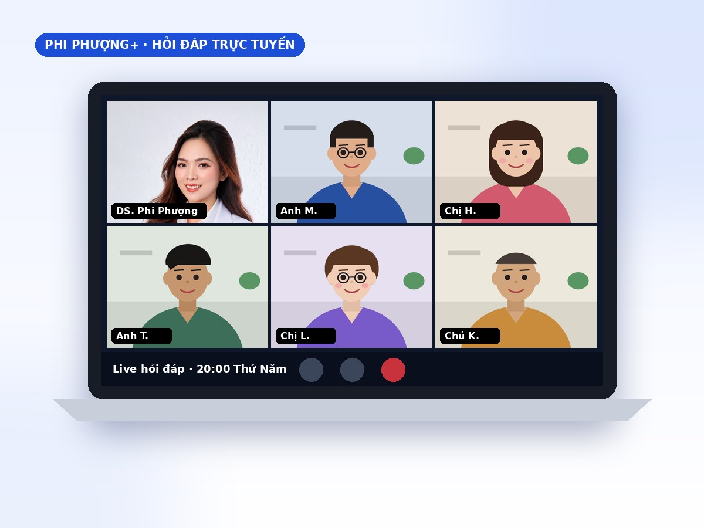
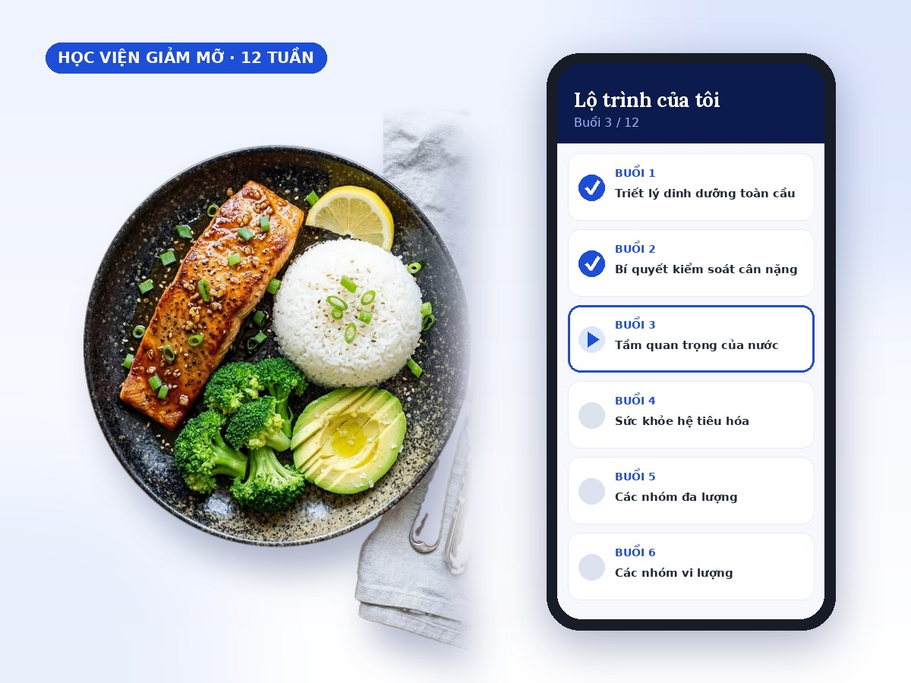
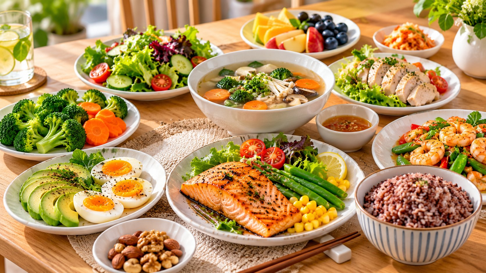

Sống khỏe.
Sống chất.
Đồng hành cùng anh chị kiến tạo phiên bản khỏe mạnh và hạnh phúc hơn mỗi ngày.
Giảm cân khoa học và thay đổi lối sống để cải thiện sức khỏe tốt hơn – không nhịn đói, không thuốc giảm cân, không phải bỏ tiếp khách.

Giúp người Việt bận rộn sống khỏe hơn mỗi ngày
Phần khó nhất khi cải thiện ăn uống là tìm được người hiểu vì sao anh chị chật vật. Phượng bắt đầu từ chính hoàn cảnh của anh chị, đưa ra kế hoạch thực tế, làm được trong đời thật và mang lại kết quả. Anh chị không đơn độc – Phượng ở đây để giúp.
Cứ tin tưởng vào Phượng. Phượng chăm sóc rất nhiệt tình, tận tâm và mang lại kết quả rất tốt.
Học viên chương trình Ăn ngon – Dáng thonCứ ăn theo hướng dẫn của huấn luyện viên thì sẽ đạt được kết quả như ý.
Học viên chương trình Ăn ngon – Dáng thonPhượng có kiến thức chuyên sâu nhưng chia sẻ rất dễ hiểu, nên áp dụng rất nhanh.
Học viên chương trình Ăn ngon – Dáng thonCấu trúc bữa ăn là cấu trúc cơ thể.
Anh chị không cần siêu thực phẩm đắt tiền hay nhịn đói cả ngày để cải thiện sức khỏe. Phượng giúp anh chị hiểu cách sống khỏe mà không thêm áp lực vào cuộc sống vốn đã bận rộn.
Tìm cách đồng hành phù hợp với anh chị
Trả lời 3 câu hỏi nhanh, Phượng gợi ý hình thức hỗ trợ hợp với mục tiêu, thời gian và ngân sách của anh chị.
Coaching dinh dưỡng cá nhân hóa
Anh chị làm việc trực tiếp với Phượng – người sẽ xây dựng kế hoạch riêng phù hợp với anh chị. Check-in hằng tuần và kết quả thay đổi cuộc sống, với chi phí hợp lý.
Phi Phượng+
Gói thành viên hằng tháng: bài viết độc quyền, buổi hỏi đáp với chuyên gia và cộng đồng riêng giúp anh chị giữ kỷ luật.


Giảm cân bền vững theo nhịp độ của anh chị
Học viện Giảm Mỡ 12 tuần giúp anh chị giảm cân và giữ được cân nặng. Học ở bất cứ đâu, truy cập trọn đời.
Người thật. Kết quả thật.
Phượng đã giúp hơn 100 chủ doanh nghiệp giảm cân hiệu quả – an toàn – bền vững. Anh chị có thể là người tiếp theo.
Bài viết mới nhất


Anh chị không lười. Anh chị chỉ thiếu một kế hoạch vừa với đời thật.
Những con số anh chị nên biết
Bệnh chuyển hóa đang tăng nhanh ở Việt Nam – và phần lớn không có triệu chứng cho đến khi đã muộn. Tin tốt: đa số yếu tố nguy cơ có thể cải thiện bằng ăn uống và lối sống.
Số liệu tổng hợp từ Điều tra quốc gia yếu tố nguy cơ bệnh không lây nhiễm (WHO STEPS) 2021 của Bộ Y tế và các nghiên cứu phân tích dữ liệu này đăng trên BMC Public Health, International Journal of Public Health; khảo sát quốc gia về tiểu đường và tiền tiểu đường 2021.
Ăn ngon – Dáng thon
Không nhịn đói, không kiêng khem cực đoan. Chỉ cần ăn đúng, uống đủ, vận động hợp lý và có người đồng hành – những thay đổi nhỏ, đúng hướng, lặp lại đủ lâu.
Lộ trình 90 ngày
Xin chào, Phượng là dược sĩ – và là người đồng hành dinh dưỡng của anh chị
Phượng từng dư cân, bụng lớn, đã thử nhịn ăn, thuốc giảm cân, nịt bụng – và phải trả giá bằng sức khỏe. Khi hiểu đúng dinh dưỡng, Phượng giảm 4 kg, vòng eo từ 74 cm xuống 66 cm và 5 lần hoàn thành cự ly 21 km. Giờ Phượng đồng hành cùng anh chị bằng chính trải nghiệm đó, cùng nền tảng Dược và chứng nhận huấn luyện viên dinh dưỡng của Viện Dinh dưỡng Quốc gia.
Bài học 5 phút
Kiến thức ngắn gọn, áp dụng được ngay – dành cho người không có thời gian đọc dài.
Tìm câu trả lời cho vấn đề của anh chị
Cùng xây dựng hệ thống lan tỏa lối sống khỏe
Phượng tìm những người có tâm, muốn phát triển sự nghiệp trong lĩnh vực dinh dưỡng – được đào tạo bài bản, làm việc theo quy trình rõ ràng.
Anh chị còn băn khoăn?
{{f.a}}
30 phút có thể thay đổi cả năm sức khỏe của anh chị
Phượng sẽ gọi hoặc nhắn Zalo trong 24 giờ để hẹn lịch. Anh chị chuẩn bị sẵn kết quả xét nghiệm gần nhất nhé.
5 phút khỏe mỗi tuần
Mỗi sáng thứ Hai: 1 bài học dinh dưỡng, 1 thực đơn gợi ý, 1 mẹo cho người bận rộn. Hủy bất cứ lúc nào.